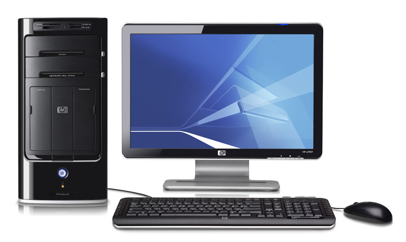

우리가 일반적으로 보는 컴퓨터. 노트북이나 태블릿 컴퓨터, 스마트폰에 비해 가격 대 성능비가 가장 높으나 덩치가 크고 따로 배터리가 없는 관계로 전원에 맞물려 사용해야 하는 까닭에 휴대가 불가능하다.
데스크톱이라는 이름은 책상 위(Desktop)에 올려놓고 쓴다는 의미이다.

사용 중에 이동할 수 없다는 단점이 있지만, 기기의 크기가 크고 콘센트에 물려 쓰는 특성상 모바일 기기에 비해 넉넉한 전원 환경을 확보할 수 있다는 장점으로도 작용한다.
유선으로 지속적으로 전원이 공급되고 많은 전력을 사용하면서도 냉각환경도 좋기 때문에 실제 발휘하는 성능으로 치면 데스크톱 쪽이 넘사벽이다. 물론 넷탑이나 NAS처럼 극 저전력(=극 저성능)으로 맞출 수도 있기는 하다.